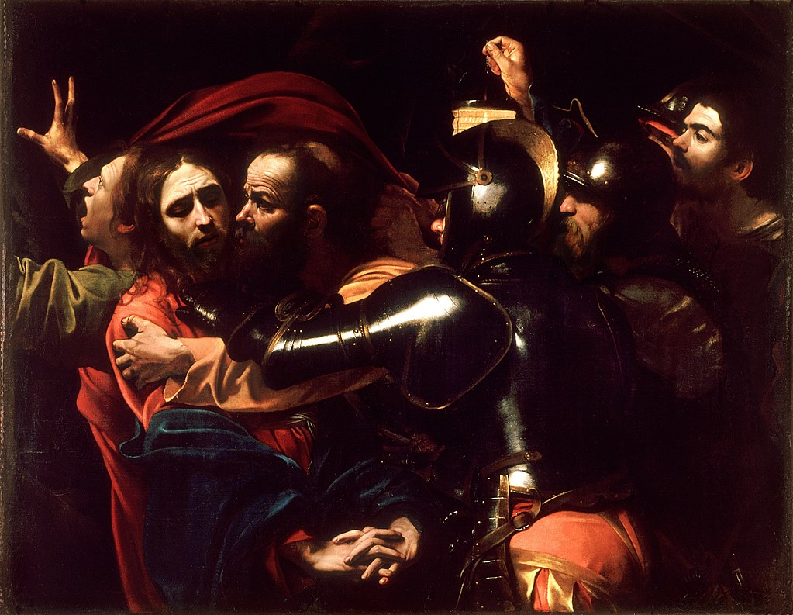

<head>
<meta charset="UTF-8" />
<meta name="keywords" content="drawing, painting" />
<meta name="description" content="drawings by Sunjy" />
<title>Sunjy</title>
<link rel="shortcut icon" type="image/x-icon" href="../../mImages/mCommon/favicon.ico" media="screen" />
<link rel="stylesheet" type="text/css" href="../../mCsses/mCommon/mCssA.css" />
<link rel="stylesheet" type="text/css" href="../../mCsses/mCommon/mCssB.css" />
<link rel="stylesheet" type="text/css" href="../../mCsses/mCommon/mCssC.css" />
<link rel="stylesheet" type="text/css" href="../../mCsses/mCommon/mCssD.css" />
<link rel="stylesheet" type="text/css" href="../../mCsses/mContent/mCssA.css" />
<link rel="stylesheet" type="text/css" href="../../mCsses/mContent/mCssB.css" />
<link rel="stylesheet" type="text/css" href="../../mCsses/mContent/mCssC.css" />
<link rel="stylesheet" type="text/css" href="../../mCsses/mContent/mCssD.css" />
</head>
<script type="text/javascript" src="../../mScripts/mContent/mContentAA.js" /></script>
<script type="text/javascript" src="../../mScripts/mContent/mContentAB.js" /></script>
<script type="text/javascript" src="../../mScripts/mContent/mContentAC.js" /></script>
<script type="text/javascript" src="../../mScripts/mContent/mContentAD.js" /></script>
<script type="text/javascript"></script> 
<script type="text/javascript">
document.write('<div class="mImgAbsolute"></div>');
/*
document.write('<p class="mFontSizeBColor" />From a white paper...</p>');
document.write('<table class="center"><tr><td>');
document.write('');
document.write('</td></tr></table>');
*/
</script>


<script type="text/javascript">
document.write('<p class="mFontSizeBColor" />The Taking of Christ</p>');
document.write('<p class="mFontSizeSColor" />“The Taking of Christ” by Caravaggio depicts the arrest of Jesus just as Judas kisses Jesus to identify him for the soldiers. There are seven figures in the painting; they are John, Jesus, Judas, three soldiers, and a man holding a lantern to the scene. <br><br>The figures are portrayed before a very dark background. The man at the right holding a lantern is believed to be a self-portrait of Caravaggio. At the far left, St John is fleeing as a soldier is grabbing his cloak.<br><br>The Italian Baroque master Michelangelo Merisi da Caravaggio would have had many influences on the composition of this masterpiece.<br><br>One of these influences may have been an 1509 woodcut by Albrecht Dürer in which the central group is comprised of Jesus, Judas, and the soldier with an outstretched hand, resembling this version of Caravaggio’s “The Taking of Christ.”<br><br>This story from the New Testament was in high demand as a painting, as there are at least 12 known actual copies of this painting.  At least one is believed to be an original copy made by Caravaggio.<br><br>By the late 18th century, this original painting was thought to have disappeared, and its whereabouts remained unknown for about 200 years.<br><br>In 1990, this lost masterpiece was recognized and discovered in the residence of the Society of Jesus in Dublin, Ireland. The painting had passed down through many owners.<br><br>It had long been considered a copy of the lost original by the various owners.<br><br>After experts were asked to examine it for restoration and the layers of dirt and discolored varnish were removed, the technical quality of the painting was revealed, and it was eventually identified as Caravaggio’s lost painting.<br><br>The painting is on indefinite loan to the National Gallery of Ireland from the Jesuit Community, Leeson Street, Dublin.<br></p>');
document.write('<table class="center" /><tr><td>');
document.write('<br>The figures are portrayed before a very dark background. The man at the right holding a lantern is believed to be a self-portrait of Caravaggio. At the far left, St John is fleeing as a soldier is grabbing his cloak.<br><br>The Italian Baroque master Michelangelo Merisi da Caravaggio would have had many influences on the composition of this masterpiece.<br><br>One of these influences may have been an 1509 woodcut by Albrecht Dürer in which the central group is comprised of Jesus, Judas, and the soldier with an outstretched hand, resembling this version of Caravaggio’s “The Taking of Christ.”<br><br>This story from the New Testament was in high demand as a painting, as there are at least 12 known actual copies of this painting.  At least one is believed to be an original copy made by Caravaggio.<br><br>By the late 18th century, this original painting was thought to have disappeared, and its whereabouts remained unknown for about 200 years.<br><br>In 1990, this lost masterpiece was recognized and discovered in the residence of the Society of Jesus in Dublin, Ireland. The painting had passed down through many owners.<br><br>It had long been considered a copy of the lost original by the various owners.<br><br>After experts were asked to examine it for restoration and the layers of dirt and discolored varnish were removed, the technical quality of the painting was revealed, and it was eventually identified as Caravaggio’s lost painting.<br><br>The painting is on indefinite loan to the National Gallery of Ireland from the Jesuit Community, Leeson Street, Dublin.<br>" />');
document.write('</td></tr></table>');
</script>


